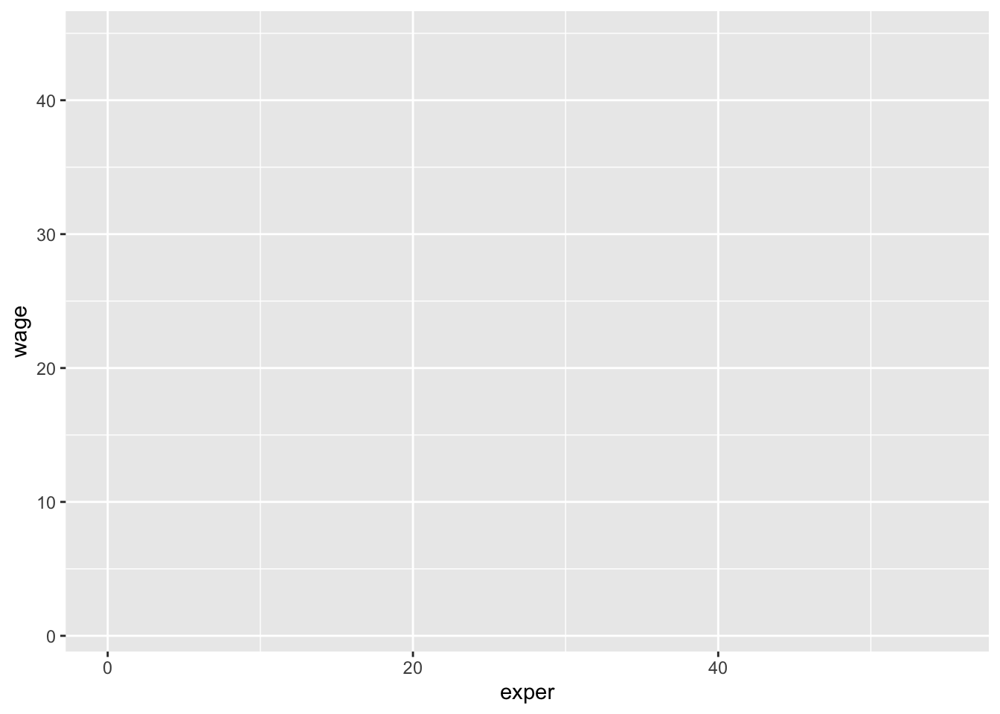
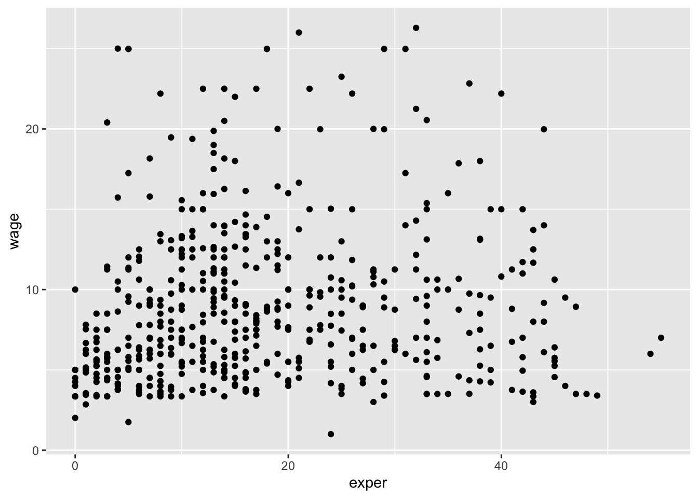

library(ggplot2)session3
Session 3: Data Exploration and Visualization
In this session, we will explore the ways to create, manipulate, and export variety of plots such as histograms, boxplots, line plots, and scatter plots.
R is one of the most versatile platform for data visualization and it can create almost any type of graph. Although there are several ways to create graphs in R, we will particularly focus on “ggplot2” package which is arguably one of the most used package in R.
Introduction to ggplot2 grammar
ggplot2 uses a language (a.k.a grammar of graphics) to describe how to plot data. To begin with, let’s call a simple data data set and plot it.
# load data
library(mosaicData)
data(CPS85 , package = "mosaicData")The first function in building a graph is the ggplot function. It specifies the
data frame containing the data to be plotted
the mapping of the variables to visual properties of the graph. The mappings are placed within the
aesfunction (where aes stands for aesthetics).
library(ggplot2)
ggplot(data = CPS85,
mapping = aes(x = exper , y = wage))
Why do you think the graph is empty? It is because we haven’t specified what data we want to place on the graph - although we only specified the x and y axes.
geoms
Geoms are the geometric objects (points, lines, bars, etc.) that can be placed on a graph. They are added using functions that start with geom_. In this example, we’ll add points using the geom_point function, creating a scatterplot.
In ggplot2 graphs, functions are chained together using the + sign to build a final plot.
# add points
ggplot(data = CPS85,
mapping = aes(x = exper, y = wage)) +
geom_point()
The graph indicates that there is an outlier. One individual has a wage much higher than the rest. We’ll delete this case before continuing. Please re-call what you’ve learned from the previous data-wrangling session.
# delete outlier
library(dplyr)
Attaching package: 'dplyr'The following objects are masked from 'package:stats':
filter, lagThe following objects are masked from 'package:base':
intersect, setdiff, setequal, unionplotdata <- filter(CPS85, wage < 40)
# redraw scatterplot
ggplot(data = plotdata,
mapping = aes(x = exper, y = wage)) +
geom_point()
A number of parameters (options) can be specified in a geom_ function. Options for the geom_point function include color, size, and alpha. These control the point color, size, and transparency, respectively. Transparency ranges from 0 (completely transparent) to 1 (completely opaque). Adding a degree of transparency can help visualize overlapping points.
# make points blue, larger, and semi-transparent
ggplot(data = plotdata,
mapping = aes(x = exper, y = wage)) +
geom_point(color = "cornflowerblue",
alpha = .7,
size = 3)
Next, let’s add a line of best fit. We can do this with the geom_smooth function. Options control the type of line (linear, quadratic, nonparametric), the thickness of the line, the line’s color, and the presence or absence of a confidence interval. Here we request a linear regression (method = lm) line (where lm stands for linear model).
# add a line of best fit.
ggplot(data = plotdata,
mapping = aes(x = exper, y = wage)) +
geom_point(color = "cornflowerblue",
alpha = .7,
size = 3) +
geom_smooth(method = "lm")`geom_smooth()` using formula = 'y ~ x'
groupings
In addition to mapping variables to the x and y axes, variables can be mapped to the color, shape, size, transparency, and other visual characteristics of geometric objects. This allows groups of observations to be superimposed in a single graph.
Let’s add sex to the plot and represent it by color.
# indicate sex using color
ggplot(data = plotdata,
mapping = aes(x = exper,
y = wage,
color = sex)) +
geom_point(alpha = .7,
size = 3) +
geom_smooth(method = "lm",
se = FALSE,
size = 1.5)Warning: Using `size` aesthetic for lines was deprecated in ggplot2 3.4.0.
ℹ Please use `linewidth` instead.`geom_smooth()` using formula = 'y ~ x'
The color = sex option is placed in the aes function, because we are mapping a variable to an aesthetic. The geom_smooth option (se = FALSE) was added to suppresses the confidence intervals.
It appears that men tend to make more money than women. Additionally, there may be a stronger relationship between experience and wages for men than than for women.
scales
Scales control how variables are mapped to the visual characteristics of the plot. Scale functions (which start with scale_) allow you to modify this mapping. In the next plot, we’ll change the x and y axis scaling, and the colors employed.
# modify the x and y axes and specify the colors to be used
ggplot(data = plotdata,
mapping = aes(x = exper,
y = wage,
color = sex)) +
geom_point(alpha = .7,
size = 3) +
geom_smooth(method = "lm",
se = FALSE,
linewidth = 1.5) +
scale_x_continuous(breaks = seq(0, 60, 10)) +
scale_y_continuous(breaks = seq(0, 30, 5),
label = scales::dollar) +
scale_color_manual(values = c("indianred3",
"cornflowerblue"))`geom_smooth()` using formula = 'y ~ x'
We’re getting there. The numbers on the x and y axes are better, the y axis uses dollar notation, and the colors are more attractive (IMHO).
Here is a question. Is the relationship between experience, wages and sex the same for each job sector? Let’s repeat this graph once for each job sector in order to explore this.
facets
Facets reproduce a graph for each level a given variable (or combination of variables). Facets are created using functions that start with facet_. Here, facets will be defined by the eight levels of the sector variable.
# reproduce plot for each level of job sector
ggplot(data = plotdata,
mapping = aes(x = exper,
y = wage,
color = sex)) +
geom_point(alpha = .7) +
geom_smooth(method = "lm",
se = FALSE) +
scale_x_continuous(breaks = seq(0, 60, 10)) +
scale_y_continuous(breaks = seq(0, 30, 5),
label = scales::dollar) +
scale_color_manual(values = c("indianred3",
"cornflowerblue")) +
facet_wrap(~sector)`geom_smooth()` using formula = 'y ~ x'
labels
Graphs should be easy to interpret and informative labels are a key element in achieving this goal. The labs function provides customized labels for the axes and legends. Additionally, a custom title, subtitle, and caption can be added.
# add informative labels
ggplot(data = plotdata,
mapping = aes(x = exper,
y = wage,
color = sex)) +
geom_point(alpha = .7) +
geom_smooth(method = "lm",
se = FALSE) +
scale_x_continuous(breaks = seq(0, 60, 10)) +
scale_y_continuous(breaks = seq(0, 30, 5),
label = scales::dollar) +
scale_color_manual(values = c("indianred3",
"cornflowerblue")) +
facet_wrap(~sector) +
labs(title = "Relationship between wages and experience",
subtitle = "Current Population Survey",
caption = "source: http://mosaic-web.org/",
x = " Years of Experience",
y = "Hourly Wage",
color = "Gender")`geom_smooth()` using formula = 'y ~ x'
themes
Finally, we can fine tune the appearance of the graph using themes. Theme functions (which start with theme_) control background colors, fonts, grid-lines, legend placement, and other non-data related features of the graph. Let’s use a cleaner theme.
ggplot(data = plotdata,
mapping = aes(x = exper,
y = wage,
color = sex)) +
geom_point(alpha = .6) +
geom_smooth(method = "lm",
se = FALSE) +
scale_x_continuous(breaks = seq(0, 60, 10)) +
scale_y_continuous(breaks = seq(0, 30, 5),
label = scales::dollar) +
scale_color_manual(values = c("indianred3",
"cornflowerblue")) +
facet_wrap(~sector) +
labs(title = "Relationship between wages and experience",
subtitle = "Current Population Survey",
caption = "source: http://mosaic-web.org/",
x = " Years of Experience",
y = "Hourly Wage",
color = "Gender") +
theme_minimal()`geom_smooth()` using formula = 'y ~ x'